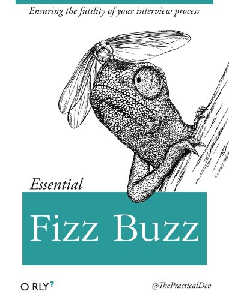
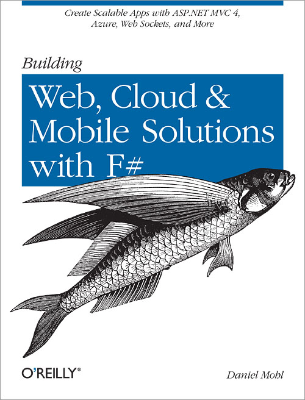
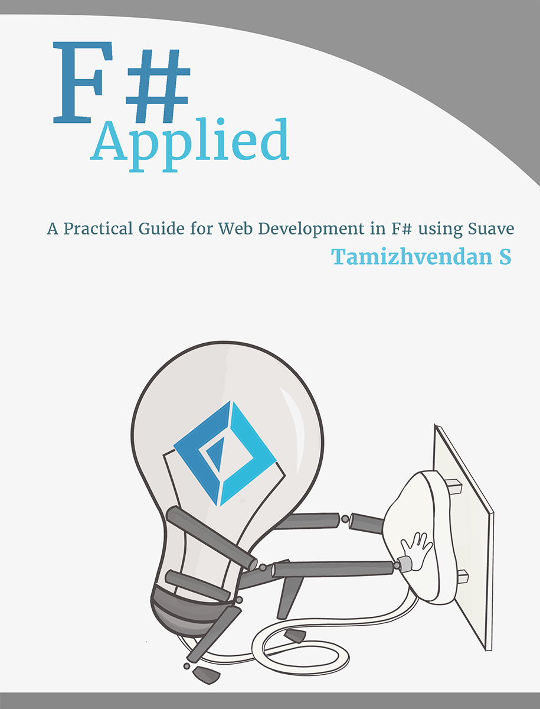

type WebServer = obj -> obj
Multiple items
type 'T option = Option<'T>
Multiple items
val env : obj
val this : Startup
member Startup.Configure : app:'a * env:'b * loggerFactory:'c -> unit
val app : 'a
val env : 'b
val loggerFactory : 'c
val ignore : value:'T -> unit
Sponsors slide (required by organizators)
Web Development With F#
Grigoriy Belenkiy@grishace
Agenda
F#
ASP.NET WebAPI/MVC
Suave/Freya
WebSharper/Fable
Why F#?
Functional
Object-oriented
Functional
1:
type WebServer = HttpRequest -> Async < HttpResponse option >
SOLID and all design patterns replaced with function composition
Object-oriented
1:
2:
3:
4:
5:
6:
7:
8:
9:
10:
11:
12:
13:
type Startup (env : IHostingEnvironment )=
// This method gets called by the runtime. Use this method to configure
// the HTTP request pipeline.
member this . Configure (app : IApplicationBuilder , env : IHostingEnvironment ,
loggerFactory : ILoggerFactory ) =
loggerFactory
. AddConsole (configuration . GetSection ("Logging" ))
. AddDebug ()
|> ignore
app . UseMvc () |> ignore
.NET language - need to coexist and interop with other languages
F#zzBuzz

https://en.wikipedia.org/wiki/Fizz_buzz#Programming_interviews
Books
 
Building Web, Cloud, and Mobile Solutions with F#
by Daniel Mohl
Expert F# 4.0
by Don Syme, Adam Granicz, Antonio Cisternino
F# Applied
by Tamizhvendan S